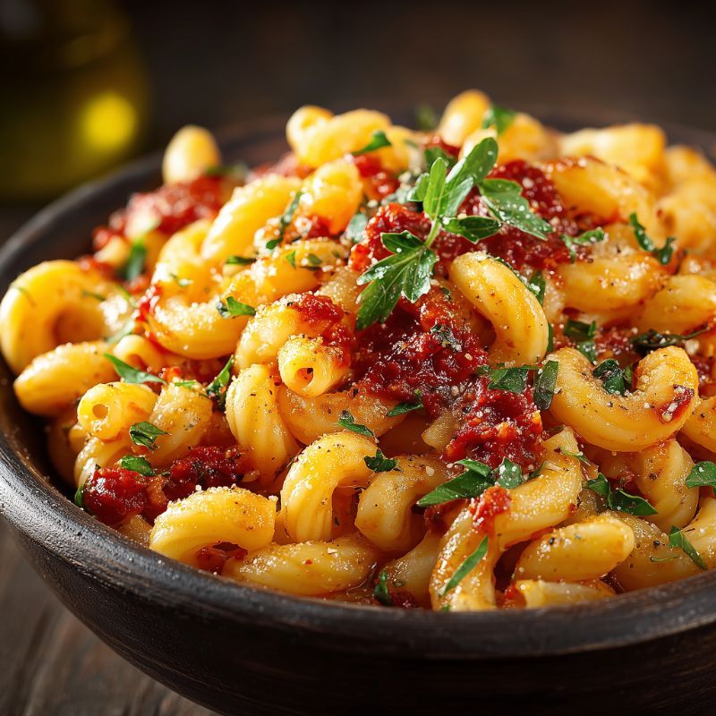
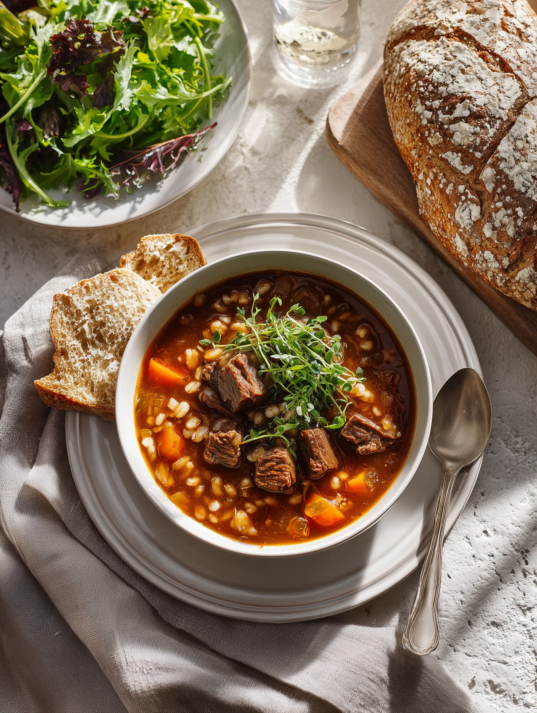
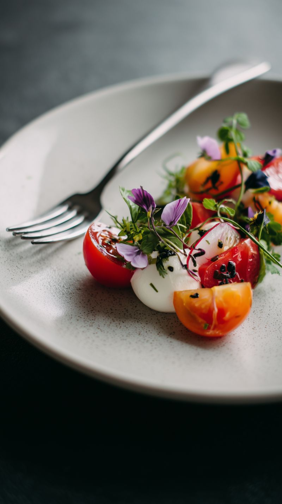
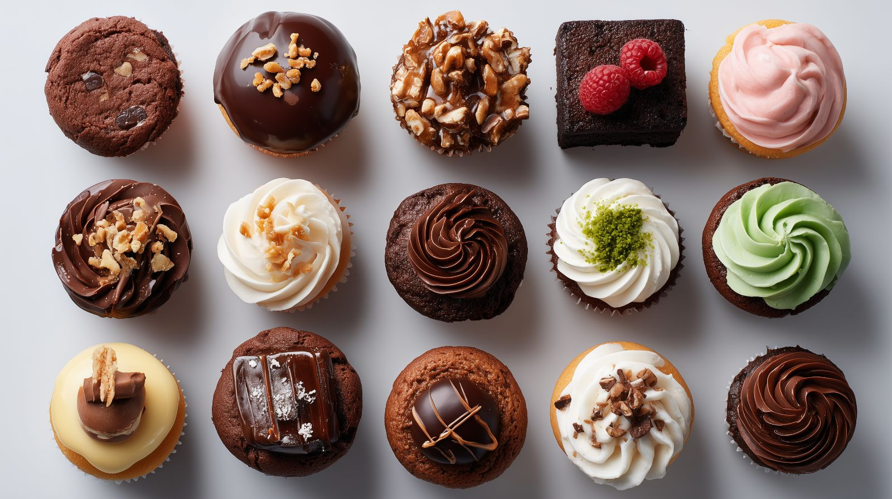
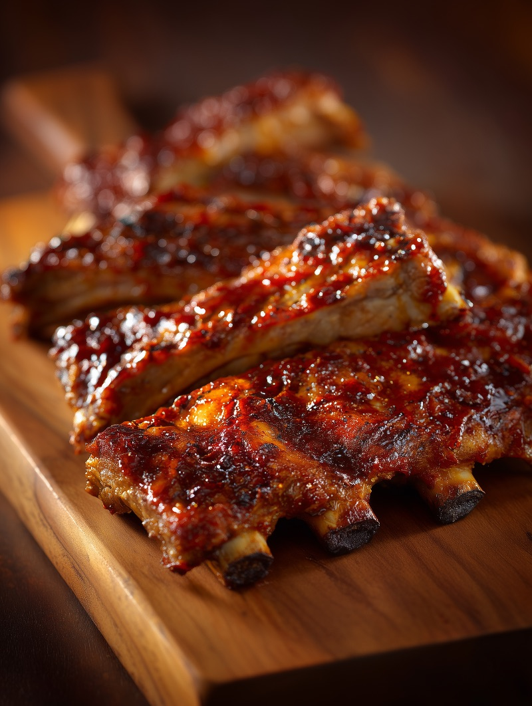

Jantar
Tagliatelle Artesanal com Sálvia
45 Min
Médio

Fontes em uso: Playfair Display (Serif), Plus Jakarta Sans (Sans-Serif) e Geist Mono (Monospace).
Mais de 2.000.000 de apaixonados por gastronomia e cozinheiros caseiros compartilhando sua paixão por sabores.
Após uma década no mundo corporativo, segui o coração até a Toscana para aprender os antigos segredos da autêntica cozinha italiana.
Entrevistas com chefs renomados e produtores locais explorando o futuro das artes culinárias.
bg-brand-rose / text-brand-rose
bg-brand-black / text-brand-black
bg-[#faf9f6]
bg-[#F5F2EA]
bg-slate-950 / Buttons
bg-slate-900 / Global Map
text-slate-500 / Body Secondary
bg-brand-rose/5
Fundo semi-transparente (rgba 255,255,255,0.65) com efeito de desfoque de 16px e borda suave.
Tom bege aconchegante utilizado para destacar cards de produtos ou novidades sazonais.
Contraste com imagens de fundo para legibilidade em títulos e descrições.
Demonstração dos 3 padrões de layout reais utilizados na aplicação.




Aprenda a arte de preparar pratos clássicos com técnicas simples e ingredientes de alta qualidade.
Arraste o card principal abaixo para experimentar o efeito de arremesso inercial e ciclagem do baralho.
"O workshop de habilidades com facas é essencial. Cozinho há anos e ele corrigiu vícios que eu nem sabia."
"Finalmente uma plataforma focada em técnica, e não só em ingredientes. Meu empratamento melhorou muito."
"O guia de fermentação natural transformou minha panificação. Minha família me pede esse pão toda semana!"
Biblioteca de ícones renderizados via <iconify-icon> (Solar & Brandico Iconsets) e SVG inlined.